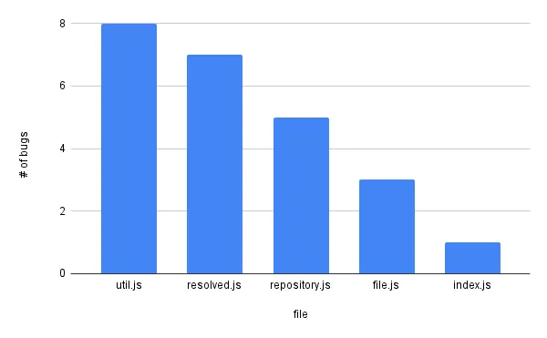

I’ve been an programmer for a decade, and I can’t believe how much wasteful code we write. Even more unbelievably, many of us “justify” our waste with vague appeals to “clean code” or “best practices.” I used to do this all the time.
These vague appeals — and the religious fervor that often accompanies them — betray a common lack of serious thinking about what makes code useful vs. wasteful. Instead, we have lots of shouting:
Every function needs a test! No wait. Only write end to end tests! You classes must be SOLID! Functions must be less than 15 LoC! DRY up your code! No wait. Actually, WET (write everything twice), then deduplicate! Leave the code better than you found it!
These are cute heuristics that fit in a Tweet, but they’ll never take us beyond “best practice” holy wars. If we want to ship valuable software quickly and consistently, we need deeper thinking.1
Deeper thinking isn’t enough, however. Many of the heuristics I poked fun at above can be traced back to careful, tome-sized texts on how to write good code. The authors are horrified at how their views have been caricatured and twisted,2 but this watering down of ideas is inevitable given that we prefer hot takes on Twitter over reading books.
To avoid this unfortunate dynamic, we need to take our best thinking about what code is useful vs. wasteful and bake that thinking into our editors. Our editor should nudge us into making better decisions about what code to write.
We need this kind of copilot more than we need the code generating kind.
What could this look like?
My editor could tell me that the test code I’m currently fixing has been broken 27 times and has never caught a single regression. I could take that stat and tell the TDD zealot on my team that automated tests are often helpful but we should delete this one.3
On the other hand, my editor could tell me when the TDD zealot is right. It could show me data on which files tend to produce the most bugs and give us a data-driven answer for which files would benefit the most from TDD zealotry:

When I was a TDD zealot, I would have benefitted from seeing graphs like this.
Maybe these specific ideas are bad, but they’re not worse than what we’re doing now:
-
Example of the need for deeper thinking: the principle of single responsibility — one of the most commonly cited programming principles — falls apart under minor scrutiny. My cofounder and I have written about this here and here. ↩︎
-
Dave Thomas — one of the OG agile manifesto signatories — said agile is dead because the common understanding of agile is so far from what he intended. In the same talk, he says he doesn’t actually write tests for the most part. Both Kent Beck and Martin Fowler talked about how their ideas are often twisted in “Is TDD dead?” conversation with DHH ↩︎
-
TDD zealots will point out that just because a test doesn’t catch defects doesn’t mean they’re completely useless and should be deleted. They’ll say that tests are also valuable because they document the exercised code and because they lead us to write more flexible code. Sometimes these benefits are real and sometimes they’re worth the cost of maintaining the test. Sometimes neither of these things are true. Data can help us answer this question better than religion. ↩︎